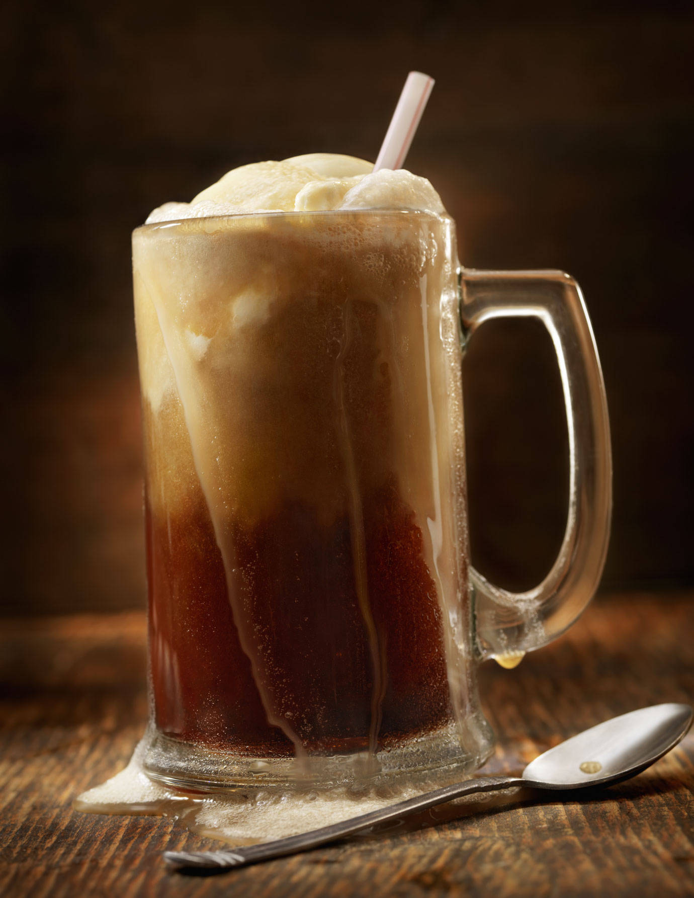

A root beer float is a kind of ice cream soda. This chilled beverage consist of ice cream in either a soft drink or a mixture of flavoured syrup and carbonated water. Our type occurs when root beer and vanilla ice cream are used together. Other names for this include: “black cow” and “brown cow”.
Robert McCay Green invented the first ice cream float in Pennsylvania in 1874. It was during the Franklins Institute’s 25 year celebration. The story goes…
On a particularly hot day, Green ran out of ice for the flavoured drinks. Instead, he used vanilla ice cream from a neighbouring vendor. Thus, inventing a new drink.